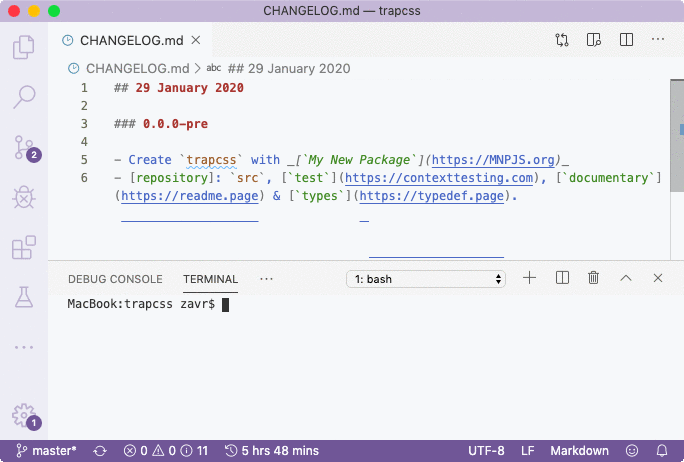
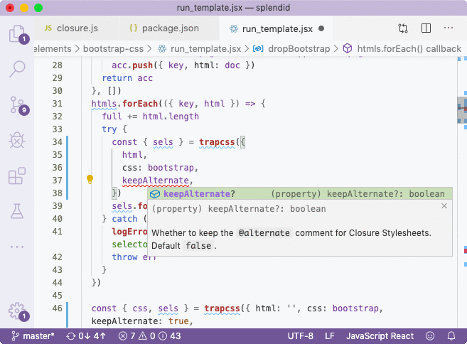
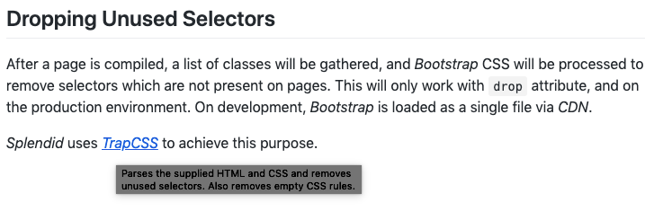

After publishing, I'll go ahead and make sure to push git tree with a new tag. The best way to do it is with ``git push --follow-tags`` command. As I promised at start, we can incorporate _TrapCSS_ into _Splendid_, a static website generator via its standard library. _StdLib_ is a new concept that allows to place all dependencies into a single file and also compile them at the same time, so that the package receives access to all methods needs from dependencies, but doesn't have to install them. Such static linking is great to create neat packages without forcing your users to pull myriads of new dependencies they have no clue as to the purpose of. This will increase trust to your package and allow to produce great independent *software products* with full type checking, as compared to half-baked *packages* that can't go anywhere without 3rd party code. It also potentially increases security as it means you're reducing the attack scope by eliminating any dependencies that might become sabotaged in future (if their version is not fixed). _Splendid's_ stdlib looks a bit like the following: ```js import '@externs/preact/types/externs' import { read, write, rm, exists, ensurePath, readDirStructure, readBuffer, } from '@wrote/wrote' import clone from '@wrote/clone' import render from '@depack/render' import aqt from '@rqt/aqt' import cleanStack from '@artdeco/clean-stack' import { ensurePathSync } from '@wrote/ensure-path' import rexml from 'rexml' import differently from 'differently' import argufy, { reduceUsage } from 'argufy' import Catchment, { collect } from 'catchment' import controlStyle from '@lemuria/control-style' import competent, { makeComponentsScript, writeAssets } from 'competent' import { c, b } from 'erte' import makePromise from 'makepromise' import usually from 'usually' import { confirm } from 'reloquent' import spawn, { fork } from 'spawncommand' import { SyncReplaceable, Replaceable, makeMarkers, makeCutRule, makePasteRule, replace, } from 'restream' import Pedantry from 'pedantry' import compare from '@depack/cache' import { Bundle, getOptions, BundleChunks, getCompilerVersion, } from '@depack/depack' module.exports = { 'getOptions': getOptions, 'getCompilerVersion': getCompilerVersion, 'Bundle': Bundle, 'BundleChunks': BundleChunks, // ... and so on } ``` I'm deliberately giving the full list of imports so that you can understand the meaning behind STDLIBs. They are literal libraries for your big projects. The fact is that you don't want to fully compile huge projects because it's time consuming and unnecessary actually, since their source code isn't going to be used in other packages. They are standalone pieces of software, so it's ok to just build them. But to eliminate dependencies, we need an stdlib. The trick is then to rename all imports from 3rd party packages that you had in source code, to point to the *stdlib* instead. ```js // was import { join } from 'path' import { read, write, ensurePath, exists } from '@wrote/wrote' import { Bundle, getOptions, BundleChunks } from '@depack/depack' import { c } from 'erte' import compare from '@depack/cache' import { deepStrictEqual } from 'assert' import { getDates } from '../' import { resolveInternal } from '../' // becomes const { join } = require('path'); const { read, write, ensurePath, exists } = require('../../../stdlib'); const { Bundle, getOptions, BundleChunks } = require('../../../stdlib'); const { c } = require('../../../stdlib'); const { compare } = require('../../../stdlib'); const { deepStrictEqual } = require('assert'); const { getDates } = require('../'); const { resolveInternal } = require('../'); ``` This is achieved when we run ÀLaMode on the source code with ``build`` environment ```json { "b": "yarn-s src jsx", "src": "alamode src -o build -s -i bin/.eslintrc,js,components,stdlib.js -j -p -m --env build", "jsx": "alamode src/components -o build/components -s -i .eslintrc -j -E --env build", } ``` _Splendid_ includes some server-side as well as client-side JSX components, so I need 2 scripts, one for SSR, and second for the browser so that _Preact_ is imported as an extern rather than package (`-E` flag). Let's just focus on the ``src`` script:
The `src/stdlib` file is the entry point that will be compiled. ``module.exports`` is a known object defined in externs and by assigning properties to it using quotes, we prevent renaming of its properties. ```js // src/stdlib.js // ... prev imports import trapcss from 'trapcss' module.exports = { 'trapcss': trapcss, 'getOptions': getOptions, // ... } ``` Now update the env: ```json { "build": { "import": { "stdlib": { "path": "stdlib", "packages": [ "...all-other-packages", "trapcss" ] } } } } } ``` And use the *stdlib* script: ```json { "stdlib": "depack src/stdlib -o stdlib/index.js -a -c -p -s --source_map_include_content", } ``` It will run _Depack_ with pretty much standard Node.JS compilation configuration, that also includes source code in source maps, so that we can debug it when necessary. It will increase the package size by about 350KB, so it's optional. An alternative for debugging is to clone package locally and link to it from the project which is being debugged. After *stdlib* is compiled, I can build the project again, and see the changes: ```js // was let dropcss = require('dropcss'); if (dropcss && dropcss.__esModule) dropcss = dropcss.default; // now 🎉 const { trapcss } = require('../../../stdlib'); ``` Using this technique, I've reduced the number of dependencies in my project (by 1 with _TrapCSS_, but by about 50 considering all other packages). This method is really great for modern package development that _NodeTools_ facilitate. As the final step, let me explain the purpose of `typedefs.json`. Because we want to link between documentation pages, we want to know where each type is described: it could be either in the main readme file, or somewhere in Wiki. This file remembers the exact location of where the type is described. _Splendid_ has got some documentation about dropping types: ```markdown ## Dropping Unused Selectors After a page is compiled, a list of classes will be gathered, and _Bootstrap_ CSS will be processed to remove selectors which are not present on pages.
I think that's about it for advanced topics, so please feel free to leave comments and ask questions. Part III will be about creating a website for the project with _Splendid_, but in due time.